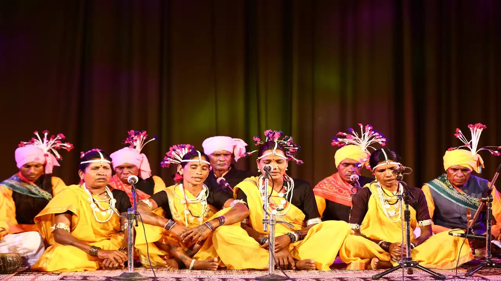
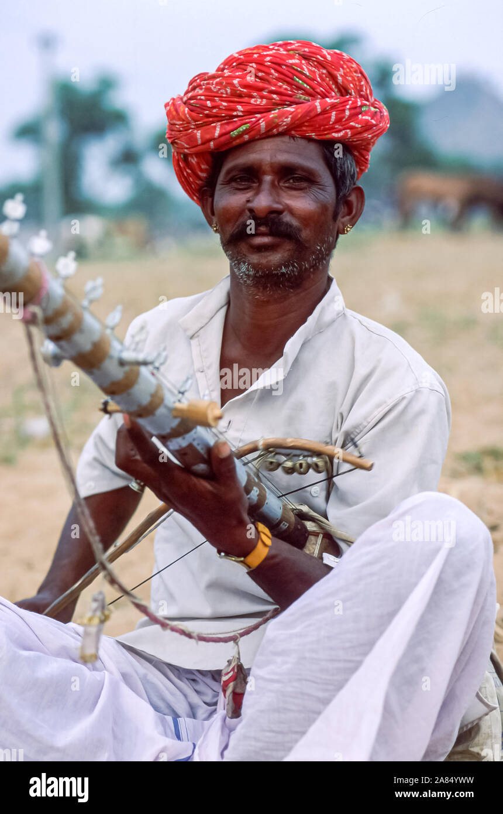
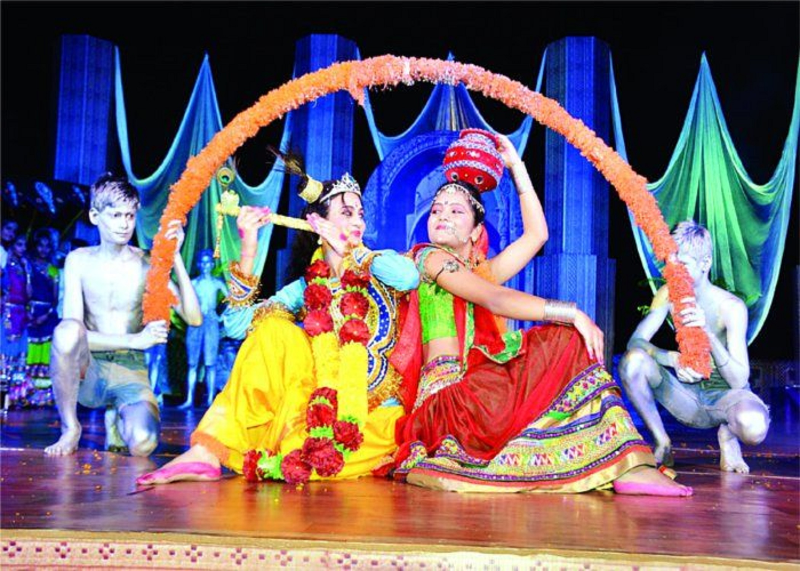

Traditional Music
The music of Madhya Pradesh is as diverse as its culture. Explore the traditional music forms that are integral to the region's heritage.

Gond Music:
Gond music is performed by the Gond tribe and is characterized by its use of traditional instruments and folk melodies.

Bhopa Music:
Bhopa music is associated with the Bhopa community and involves storytelling through song and traditional instruments.

Nimar Music:
Nimar music is traditional folk music from the Nimar region, known for its rhythmic patterns and soulful lyrics.